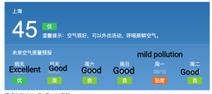
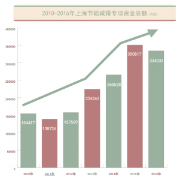

Shanghai is a cultural, business, and industry center of eastern China and due to the overpopulation in the city center, the region is battling severe air pollution issues. Pollution comes from a litany of sources, a major issue being vehicle emissions and additionally, there is also pollution from the burning of coal. Air pollution has disastrous impacts and the measures taken to alleviate this will be explained below.
What are some of the problems associated with air quality in Shanghai? Can you give some examples?
To be very honest, Shanghai’s air quality has always been very good, when you search the browser for “Shanghai’s weather”, you can see that the search results show that almost every day the air quality is excellent.

This is due to a series of effective policies launched by the Shanghai Municipal Government in recent years. From everyday life, I can also feel that the air quality is getting better. I have lived in Shanghai for more than ten years. About five years ago, there were often fog and haze in winter in Shanghai, but now, the fog and haze in winter in Shanghai has decreased significantly.
Here are some policy and news reports for your reference.
Three-year Plan of Action for Environmental Protection and Construction in Shanghai from 2018 to 2020 (Outline)
Shanghai Air Quality Report 2018: The annual average concentration of the four major pollutants is new low, and the number of excellent days is the highest in all years.
In terms of air control, the Shanghai Municipal Government has made the following efforts:
(1) The total investment in the past four years amounted to 11.75 billion yuan:
From 2013 to 2016, the total investment of special funds for energy conservation and emission reduction in Shanghai was nearly 11.75 billion yuan, and the annual investment amount showed an overall upward trend. Since 2008, the city has set up a special fund for energy conservation and emission reduction, and has formulated and revised 64 relevant rules and regulations, focusing on supporting energy-saving and low-carbon development in industry, construction, transportation and other fields, as well as air pollution prevention and control, water pollution reduction and other work.

(2) The average concentration of PM2.5 years decreased most obviously, reaching the lowest level in 2016:
From PM2.5, PM10, O3, SO2, NO2, CO and other major pollutant indices, in 2014 and 2015, compared with 2013, there is a certain proportion of decline, the decline in 2016 is more obvious. According to the data released by Shanghai Environmental Protection Bureau on Jan. 9, the annual average concentrations of PM2.5, PM10, SO2 and NO2 in Shanghai reached the lowest level ever recorded in 2016. Among them, the average concentration of PM2.5 years decreased most significantly, 45 micrograms/cubic meters, 8 micrograms/cubic meters lower than that in 2015, 15.1% lower than that in 2015, the cumulative decrease since 2013 was 27.4%, and the phased target of 20% lower was achieved one year ahead of schedule. In terms of the AQI index, the year 2016 was also 17.21% lower than that of 2013.
(3) “Eliminate” Serious Air Pollution in Three Years:
From the comparison of air quality days of different grades in the past four years, the days with excellent air quality reached 78 days in 2016, 26 days more than 52 days in 2013, while the days with severe air pollution were only 2 days in 2016, 19 days less than that in 2013.
(4) Why is the achievement sheet of air pollution control effective?
Throughout the past four years, the report card of air pollution control is inseparable from the measures taken by the regulatory authorities. For example, at the end of 2016, the Shanghai Special Emergency Plan for Heavy Air Pollution, which was revised nearly three years later, was formally implemented, and the starting conditions for the three levels of blue, orange and red were improved. Take blue warning as an example, AQI will be between 151 and 200 in the next day, and may appear short-term heavy pollution, which can also be started.
According to the relevant person in charge of the Municipal Environmental Protection Bureau, in 2016 Shanghai completed the ultra-low emission renovation of 9 600,000 kilowatt and above units of public coal-fired power plants, and completed the treatment of volatile organic compounds in 1456 industrial enterprises; the city fully supplied ordinary diesel oil meeting the requirements of the fourth national standard sulfur content limit (below 50 ppm), and eliminated 53,000 highly polluting vehicles.
“It does not depend on us whether or not the wind blows, what kind of wind blows, but it depends on us whether or not we should take action to control air pollution, what kind of action we should take, and what kind of actual effect we should strive to achieve.” As Ying Yong, the mayor of Shanghai, emphasized at a press conference earlier this year, only by taking “hard” measures to accomplish the “hard” task of atmospheric governance can we fight a hard and lasting battle for atmospheric environmental governance.
Were the Shanghai residents also involved in solving the issue? If so, how?
Major contributions:
At the request of the municipal government, Shanghai residents abandoned the traditional Chinese custom of setting off fireworks. Fireworks are very harmful to the environment and can easily produce inhalable particulate matter. Shanghai residents are not putting out fireworks, which is helpful to improve air quality.
What are some things people/government can do in their daily lives to avoid such situations?
(1) In recent years, Shanghai has made a lot of efforts in air control, soil control, urban planning and so on. If you visit Shanghai, you will see a very modern and international city. It is also a very lovely city with beautiful environment and excellent urban planning. All these are inseparable from the government’s policy and financial support. Shanghai has invested a lot of its budget in urban construction, infrastructure and environmental politics. And the government is continually doing more.
(2) Vehicle exhaust emissions are also a major problem of environmental pollution. As Shanghai’s bus system is very developed, it has well-planned subway lines, bus lines, tram lines and so on, which runs through the whole of Shanghai. Therefore, Shanghai residents use public transport very frequently, which is very good for environmental governance. At the same time, in Shanghai, the purchase of electric vehicles will be subsidized, which makes residents buy more electric vehicles than traditional cars, and also brings great help to environmental governance.
(3) What needs to be improved is that Shanghai has a huge population. According to the data, Shanghai now has 28 million permanent residents. In winter and summer, most residents can not live without air conditioning. If Shanghai residents can reduce the use time of air conditioning, it will be very helpful for air control.
Interview by Caroline Paul Kanjookaran, University of Kiel, Germany with Shanshan Wu, Donghua University, Shanghai China
About Shanshan
Shanshan majored in E-Commerce at Donghua University. She is currently studying for her second degree in Finance at the East China Normal University. She has great enthusiasm in environmental protection, women’s empowerment, climate change and other public welfare undertakings. At present, she serves as executive chairman of Lean In College, and is responsible for managing the affairs of nearly 100 college associations in China. Shanshan is a member of the Chinese Youth Delegation to the 24th UN Climate Change Conference. At the same time, she also works with her team on the topic of ‘Exploration of Sustainable Waste Classification and Recycling Mechanism in Chinese Colleges and Universities’.
Satta King Ganesh Is A Reliable And Trusted Website To Check Satta King Daily Results Online. Here You Will Get Info of Daily Lucky Numbers That Declared As Winning Numbers. Here You Can Also Check The Results of Popular Satta Companies Like Desawar, Taj, Faridabad, Ghaziabad, And Gali. As Soon As These Companies Declare Their results, We Will Update Them Here. This Website Is A Best Source To Get Satta King Online Results. To Get Fast Results Just Bookmark This Website And Visit It Time To Time. We, Will, Update Every Company Results ASAP. So, You Can Check Your Results Without Any Delay And Can Claim Your Money Fast. So, If You Are Looking For Satta King Results Online, Then You Have No Need To Go Anywhere. Just Open This Page And Check It.
Voice of Environment (A Youth Environmental Organization) conducted cleanliness & plantation drive for an eco-friendly sustainable & plastic-free Umananda Island by generating a mass awareness to build the heritage site a clean & sustainable eco-friendly premise. Umananda temple is one of the highest visiting devotee’s destinations after Maa Kamakhya Temple in Guwahati & it is a challenge to generate awareness minimizing the number…
Voice of Environment (A Youth Environmental Organization) organized an event ‘Wetland Day for Biodiversity’ to commemorate this year’s World Wetlands Day 2020 on February 2, Sunday at one of the Ramsar Sites of ‘Wetlands of International Importance’ in Guwahati. Voice of Environment, hosted a day program in collaboration with the Environment & Forest Department, Assam, Department of Environmental Science, Royal Global University, Guwahati, and Colours of North-Eastern India. The program commenced…
Achieving Agenda 2030 Needs Big Push to Scale-up Wetland Conservation, Wise-use & Restoration Wetlands are pertinent for our wellbeing, inclusive economic growth & climate mitigation & adaptation. They are the biggest source of fresh water for our consumption, agriculture & maintaining our ground water table by naturally recharging & filtering it. They act as a natural water sink. They are…
Introduction Shanghai is a cultural, business, and industry center of eastern China and due to the overpopulation in the city center, the region is battling severe air pollution issues. Pollution comes from a litany of sources, a major issue being vehicle emissions and additionally, there is also pollution from the burning of coal. Air pollution has disastrous impacts and the…
Clean Green and Eco-friendly Assam vision for a plastic-free environment As per the mission Clean Green and Beat Plastic Pollution campaign by Government of Assam which was formally inaugurated by Honorable Chief Minister of Assam, Shri Sarbananda Sonowal at Guwahati Volleyball Training Centre at Judges Field on 1st October 2019 as Clean, Green and Fit Village campaign. As Honorable CM…